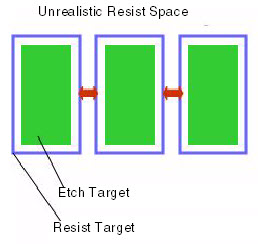
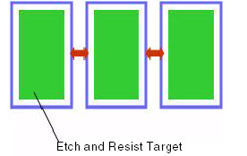

In some situations,
reaching good convergence means using an “unrealistic” resist target
space/width. An “unrealistic” target in this case means that the
output from the VEB correction step (the resist target) is either
too narrow or very closely spaced and would typically fail during lithography.
For example, you can have an etch bias from a VEB model that is
very large, leading to a resist target that has a very narrow process
window.
Figure 1. Unrealistic Target Example
In
this case, you can apply resist constraints by using the mrc_rule
keyword in the VEB denseopc_options block, the same command as used
by the optical and resist version of the setup file. For example:
...
mrc_rule external etch_target {
use 0.030 euclidean
}
...
This example specifies the minimum distance
to allow for the rule and applies a Euclidean metric. Figure 2 shows how this applies to the “unrealistic”
target from Figure 1.
Figure 2. mrc_rule Adjustment